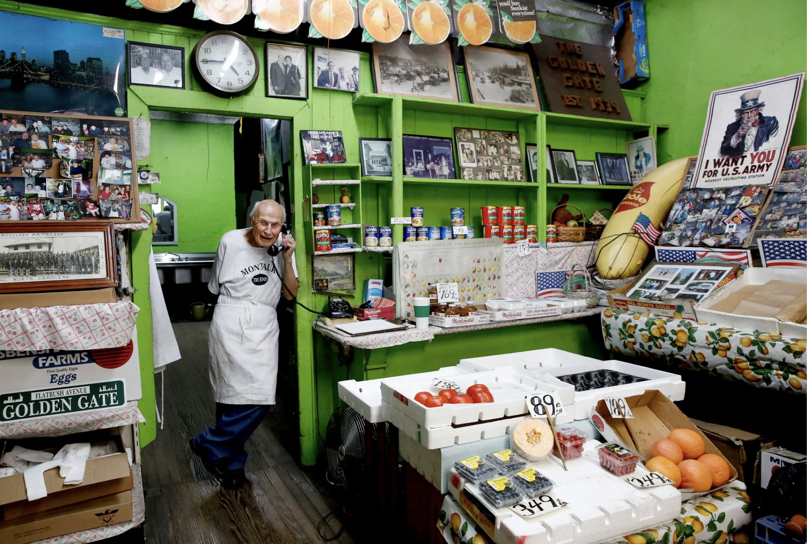
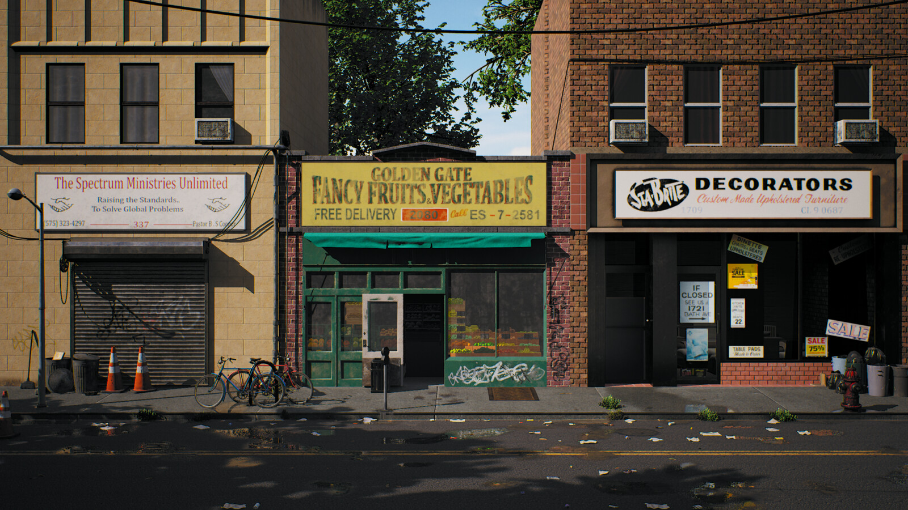
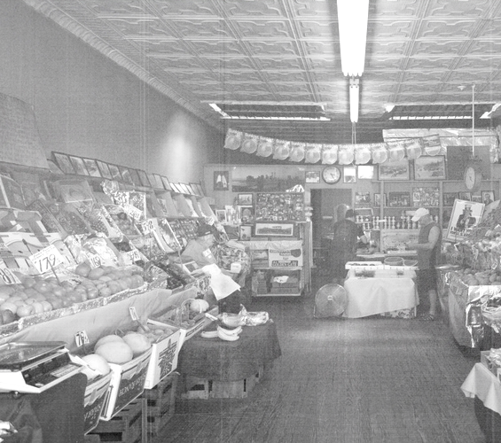
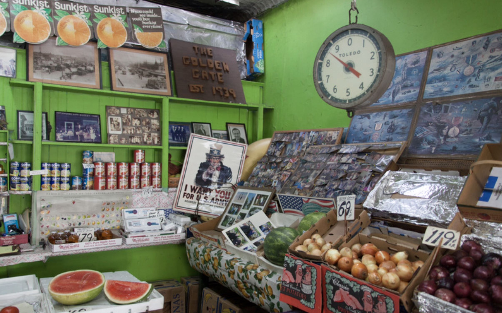

JOHN CORTESE WAS A WORLD WAR II VETERAN WHO SERVED IN THE INVASION
OF NORMANY AND THE BATTLE OF THE BULGE AS PART OF THE 551ST FIELD
ARTILLERY BATTALION.
Cortese’s grandfather opened Golden Gate Fancy Fruits at 2080
Flatbush Avenue in 1939 and until the coronavirus crisis, Cortese
was still manning it.
JOHN WOKE UP EVERY MORNING AT 7 A.M. AND RAN THE STORE HIMSELF AT
GOLDEN GATE FANCY FRUITS AND VEGETABLES, ON THE BORDER OF FLATLANDS
AND MILL BASIN IN SOUTH BROOKLYN.
He has been working there since his father opened the place in 1939.
“When you come in here, it’s still 1939,” he said. “Older people get
flashbacks when they walk in.”

MR. CORTESE TOOK OVER FROM HIS FATHER IN 1960 AND LATER BOUGHT THE
BUILDING, WHICH HAD ENABLED HIM TO STAY IN BUSINESS.
“It hasn’t changed since then,” he said. “Once, I was going to redo
the storefront, but my accountant said, ‘Why? Then the landlord will
expect a new ceiling, new walls, new everything.’ And I’m glad I
never did, because now it’s an antique.”
THE WOOD FLOOR, WITH ITS NARROW BOARDS IS ORIGINAL, AS IS THE TIN
CEILING. CANS OF GOYA BEANS AND REDPACK CRUSHED TOMATOES SAT ON
PAINTED WOODEN SHELVES.
Produce was displayed beautifully on angled stands and atop wooden
crates that line both sides of the store. Two scales still hang from
the ceiling, just in case of a power outage, said Cortese’s son,
John. Original Sunkist advertisements, old-school product labels
that John saved, and a plethora of vintage photographs decorated the
store.

“I never considered this work,” Cortese says, looking around the
store, where most of the displays sit empty. Bags of fruit rest next
to him on the shelf, but he’s not in a hurry to tend to them. “Even
to this day, it’s just a hobby,” Cortese says.
“Sometimes, when a customer will come in, I won’t have what they’re
looking for,” Cortese says. “I’ll tell them to come back the next
day, and I’ll have it. Provided it meets my expectations.”
Mr Cortese passed away in 2020 at the age of 95.
